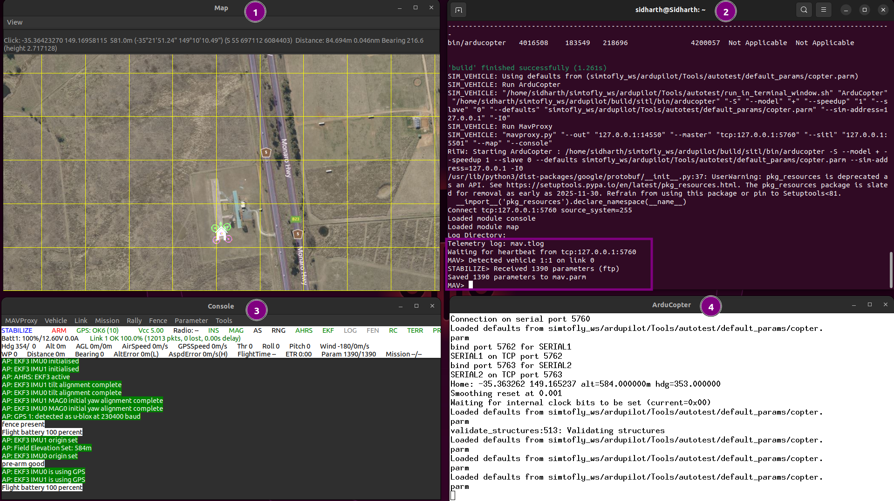
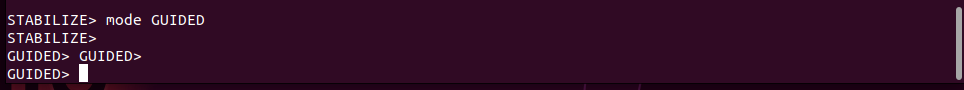
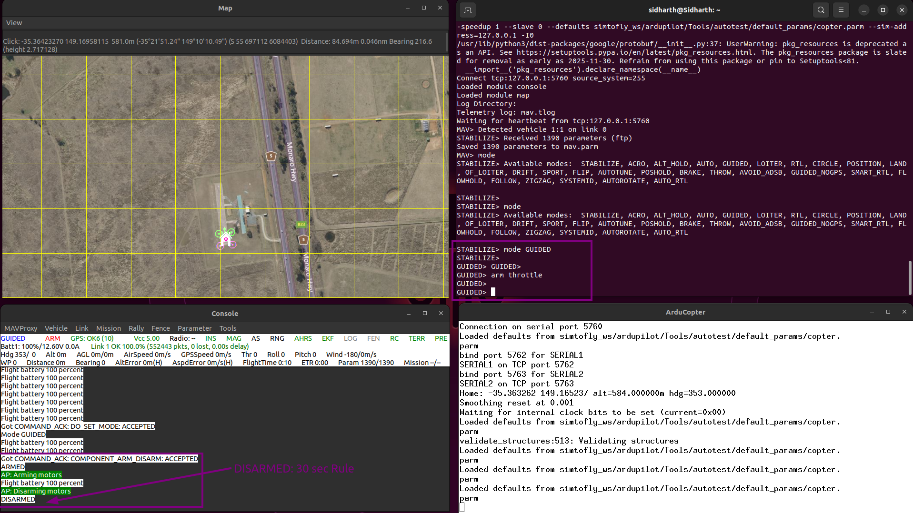
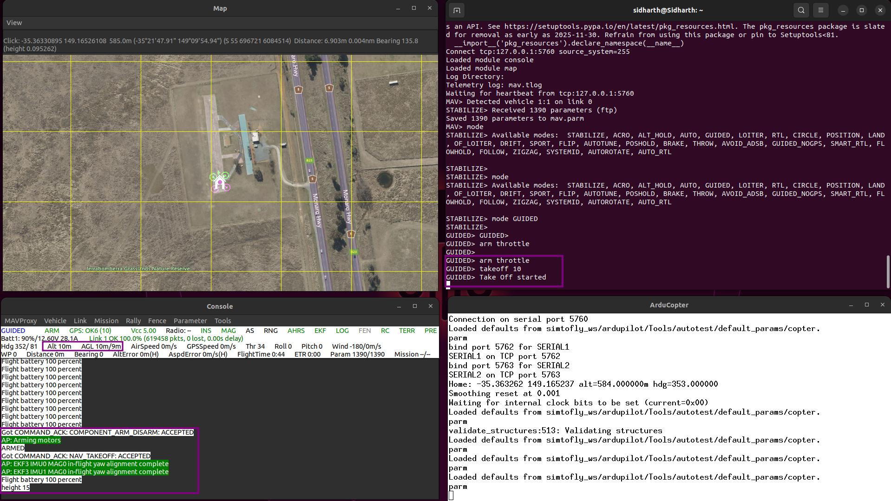

1.4 MAVProxy Command Line Control¶
What You'll Learn¶
Master basic drone control through MAVProxy command line:
- ✅ What MAVProxy is and why we use it
- ✅ Launch SITL with map and console
- ✅ Understand flight modes
- ✅ Arm and disarm the vehicle
- ✅ Perform takeoff and landing
- ✅ Basic navigation using map
- ✅ Monitor telemetry data
Time: 60-90 minutes
Prerequisites¶
Before starting, you must have completed:
- ✅ 1.1 Prerequisites and Setup
- ✅ 1.2 Environment Setup
- ✅ 1.3 ArduPilot SITL Installation
- ✅ SITL launches successfully
- ✅ Can arm/disarm vehicle
🤔 What is MAVProxy?¶
MAVProxy = MAVLink Proxy and Command Shell
It's a command-line ground control station that lets you:
- Control drone through typed commands
- Monitor telemetry in real-time
- Load and execute missions
- Visualize drone position on map
Why MAVProxy?
- Lightweight and fast
- Perfect for learning fundamentals
- Scriptable and automatable
- Works over SSH (no GUI needed)
Later we'll use: ROS2 for advanced control, but MAVProxy teaches the basics.
🗺️ Launch SITL with Map and Console¶
Basic SITL Launch with Visualization¶
Instead of just text output, let's open map and console windows:
Note: We can run sim_vehicle.py from any directory because we added it to PATH in Section 1.3.
Command breakdown:
- -v ArduCopter — Vehicle type (multirotor)
- --map — Opens map window
- --console — Opens console window
This takes: 10-20 seconds to launch all windows.
Expected Windows¶

Four windows will open:
| Window | Name | Purpose |
|---|---|---|
| Top-Left | MAVProxy 2D Map | Shows drone position on satellite/terrain map with grid overlay |
| Top-Right | SITL Main Terminal | Command input (MAVProxy prompt), system messages |
| Bottom-Left | MAVProxy Console | Real-time telemetry (GPS, altitude, speed, battery, flight mode) |
| Bottom-Right | ArduCopter Console | ArduCopter initialization messages and system logs |
✅ Success: All four windows open, see STABILIZE> prompt in main terminal
Understanding the Windows¶
SITL Main Terminal (Top-Right):
- Purpose: Enter commands here - Shows: MAVProxy prompt, system messages, command responsesMAVProxy 2D Map (Top-Left): - Drone icon: Green marker showing position - Heading: Arrow indicates drone orientation - Controls: Zoom (mouse wheel), pan (drag), right-click for commands
MAVProxy Console (Bottom-Left): - Real-time data displayed: - Mode, Armed status - Altitude, Speed - GPS status, Satellite count - Battery voltage, percentage - Heading, Attitude
ArduCopter Console (Bottom-Right): - Shows: System initialization, parameter loading, validation messages - Use: Monitor for errors or warnings during startup
Can't See Windows? (Headless/SSH Users)¶
If you're on SSH without display:
Skip map/console — Control via terminal only (works fine for learning).
🎮 Understanding Flight Modes¶
ArduCopter has different modes for different purposes:
Common Flight Modes¶
| Mode | Purpose | When to Use |
|---|---|---|
| STABILIZE | Manual control, self-levels | Default mode, manual flying |
| GUIDED | Computer control via commands | Autonomous commands (takeoff, land) |
| AUTO | Follow pre-planned mission | Execute waypoint missions |
| LOITER | Hold position using GPS | Pause and hover in place |
| CIRCLE | Fly in circular pattern | Practice autonomous flight |
| RTL | Return to launch point | Emergency return home |
| LAND | Descend and land | Controlled landing |
For this tutorial, we'll use:
GUIDED— For takeoff and landingLOITER— Hold positionCIRCLE— Fly in circlesRTL— Return home
Check Current Mode¶
At MAVProxy prompt:
Expected output:

Change Mode¶
Expected output:

Notice the prompt changes to show current mode.
✅ Success: Mode changed, prompt shows GUIDED>
✈️ Arming and Takeoff¶
Pre-Arm Checks¶
Before arming, ArduPilot performs safety checks:
- GPS lock (SITL has instant GPS)
- Battery sufficient
- No critical errors
In SITL, these pass automatically.
Arm the Vehicle¶
Switch to GUIDED mode first:
Then arm:
Expected output:

Console window: Shows "ARMED" status
What happens:
- Motors would spin up (if real drone)
- Vehicle ready to fly
- LEDs change (on real hardware)
✅ Success: Status shows ARMED
Important: 30-Second Rule¶
After arming, you have 30 seconds to takeoff.
If you don't send takeoff command within 30 seconds:
- Vehicle automatically disarms (safety feature)
- You'll see:
DISARMED
This prevents: Leaving motors armed indefinitely.
Takeoff Command¶
Immediately after arming:
Command breakdown:
takeoff— Takeoff command10— Target altitude in meters
Expected behavior:
- Drone climbs to 10 meters
- Console shows altitude increasing
- Map shows altitude number changing
This takes: 10-20 seconds to reach altitude.
Watch console window: Altitude (Alt) climbs to ~10m

✅ Success: Altitude reaches 10 meters, drone hovers
🧭 Basic Navigation¶
Navigate Using Map (Easiest Method)¶
After takeoff, the easiest way to move the drone:
- Right-click on the map where you want drone to go
- Select "Fly to here" from the menu
- Drone automatically flies to that position and holds
Practice:
- Click different locations on the map
- Watch drone move in real-time
- Observe drone icon following your commands
- Map updates position continuously

✅ This is the recommended way for beginners!
Hold Position (LOITER Mode)¶
To pause and hover in place:
What happens:
- Drone holds current GPS position
- Maintains altitude (with rc 3 1500)
- No drift (GPS position lock)
Use this to:
- Pause during flight
- Hold position while you plan next move
- Emergency "stop and hover"
Note: The rc 3 1500 command sets throttle to maintain altitude in LOITER mode.
Practice: Fly in Circles¶
Make drone fly in circular pattern:
mode GUIDED
arm throttle
takeoff 15
# Set throttle to maintain altitude
rc 3 1500
# Switch to CIRCLE mode
mode CIRCLE
What happens:
- Drone flies in circles around current center point
- Radius: 10 meters (default)
- Maintains 15m altitude (thanks to rc 3 1500)
- Direction: Clockwise
Watch the map: Drone traces circular path
Return home:
Note: The rc 3 1500 command is necessary to maintain altitude in CIRCLE and LOITER modes. Without it, drone will lose altitude.
🛬 Landing¶
Land Command¶
When ready to land:
What happens:
- Drone descends at controlled rate
- Automatically disarms when on ground
- Mode changes to LAND
This takes: 10-30 seconds depending on altitude.
Console window: Watch altitude decrease to 0
✅ Success: Altitude reaches 0, status shows DISARMED
Alternative: RTL (Return to Launch)¶
Return and land at start position:
What happens:
- Drone flies back to start position
- Climbs to RTL altitude (15m default)
- Descends and lands at home
Useful for: Emergency return or end of mission.
📊 Reading Telemetry¶
Console Window Data¶
Key information displayed:
What each means:
- Mode — Current flight mode
- Armed — Motors armed/disarmed
- Alt — Altitude above ground
- Spd — Ground speed
- Hdg — Heading (0° = North)
- GPS — GPS status and satellite count
- Bat — Battery voltage and percentage
MAVProxy Status Commands¶
Get GPS position:
Get attitude (roll, pitch, yaw):
Get battery status:
🎯 Complete Flight Example¶
Video Demonstration¶
Watch the complete flight sequence in action:

Step-by-Step Flight¶
# 1. Start SITL with map
sim_vehicle.py -v ArduCopter --map --console
# 2. Change to GUIDED mode
mode GUIDED
# 3. Arm the vehicle
arm throttle
# 4. Takeoff to 10 meters
takeoff 10
# Wait for altitude to reach 10m (watch console)
# 5. Navigate using map
# Right-click on map and select "Fly to here"
# Watch drone move to selected position
# 6. Try LOITER mode
rc 3 1500
mode LOITER
# 7. Try CIRCLE mode
mode CIRCLE
# Watch drone fly in circles
# 8. Return to launch
mode RTL
# Wait for drone to return and land
# 9. Exit SITL
Ctrl+C
Complete this sequence to verify everything works.
✅ Success: Drone completes full flight, lands safely
🌍 Custom Location (Optional)¶
Why Change Location?¶
Default SITL location is in Australia. You can set your own location.
Add Custom Location¶
Create location entry:
echo "custom=YOUR_LAT,YOUR_LONG,ALT,HEADING" >> ~/simtofly_ws/ardupilot/Tools/autotest/locations.txt
Example (replace with your coordinates):
Format:
- Name = your location identifier
- LAT = latitude (decimal degrees)
- LONG = longitude (decimal degrees)
- ALT = altitude MSL (meters)
- HEADING = initial heading (0 = North)
Launch at Custom Location¶
Replace myfield with your location name.
Map window: Shows your custom location.
📋 Verification Checklist¶
Before moving to next section, verify:
- ✅ Can launch SITL with
--map --console - ✅ Map and console windows open
- ✅ Can change flight modes (GUIDED, LOITER, CIRCLE)
- ✅ Can arm vehicle (
arm throttle) - ✅ Can takeoff to specific altitude
- ✅ Can navigate using map "Fly to here"
- ✅ Can use LOITER to hold position
- ✅ Can use CIRCLE to fly in circles
- ✅ Can land safely with RTL or land command
- ✅ Understand telemetry data in console
- ✅ Completed full flight sequence
All checked? You can control a simulated drone! 🚀
🎯 What You Accomplished¶
- ✅ Launched SITL with visualization (map + console)
- ✅ Understood different flight modes
- ✅ Armed and disarmed vehicle
- ✅ Performed takeoff to target altitude
- ✅ Navigated drone using map interface
- ✅ Used LOITER mode to hold position
- ✅ Used CIRCLE mode for autonomous flight
- ✅ Landed safely using RTL
- ✅ Read and understood telemetry data
- ✅ Completed full autonomous flight sequence
🚀 Next Steps¶
Continue to 1.5 Gazebo Simulation where we'll:
- Install Gazebo Harmonic 3D simulator
- Connect Gazebo to SITL
- See realistic drone physics
- Visualize sensors and environment
❓ Common Questions¶
Q: Why use GUIDED mode instead of STABILIZE?¶
A:
- GUIDED — Accepts autonomous commands (takeoff, land)
- STABILIZE — Manual RC control only (no autonomous commands)
For autonomous missions, always use GUIDED or AUTO.
Q: What if I forget to takeoff within 30 seconds?¶
A: Vehicle disarms automatically. Just arm again and send takeoff command.
Q: Can I control multiple drones in SITL?¶
A: Yes! Use multiple SITL instances on different ports. We'll cover this in advanced topics.
Q: How do I make drone hold position?¶
A: Use one of these modes:
- LOITER with
rc 3 1500— Holds current GPS position - Map "Fly to here" in GUIDED mode — Holds at clicked position
- STABILIZE won't hold position (manual control only)
Q: Why do CIRCLE and LOITER need rc 3 1500?¶
A: These modes need throttle input to maintain altitude. Without it, the drone will lose altitude. The rc 3 1500 command sets throttle to middle position (hover).
Q: How do I stop a command mid-flight?¶
A: Send a new command (overrides previous) or change mode:
🐛 Troubleshooting¶
Map window doesn't open¶
Cause: Missing Python packages
Solution:
Relaunch SITL.
"Bad mode" error when changing modes¶
Cause: Mode name typo
Solution: Mode names are case-sensitive. Use:
GUIDED(not "guided")STABILIZE(not "stabilize")LOITER(not "loiter")
Arm command rejected "PreArm: Need 3D Fix"¶
Cause: GPS not initialized (rare in SITL)
Solution: Wait 5-10 seconds, try arming again. SITL gets instant GPS fix.
Console shows negative altitude¶
Cause: Normal! NED frame uses negative Z for up.
Solution: Nothing to fix. Just remember:
- Altitude 10m = Z of -10
- Ground level = Z of 0
Takeoff command does nothing¶
Cause:
- Not armed
- Not in GUIDED mode
- Already in air
Solution:
In this exact order.
Drone loses altitude in CIRCLE or LOITER mode¶
Cause: Missing rc 3 1500 command
Solution:
Then switch to CIRCLE or LOITER mode.
"Failed to change mode" message¶
Cause: Some modes require certain conditions (e.g., GPS lock for LOITER)
Solution: Check console for reason, or use STABILIZE/GUIDED (always available).